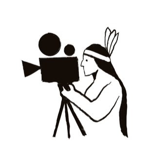
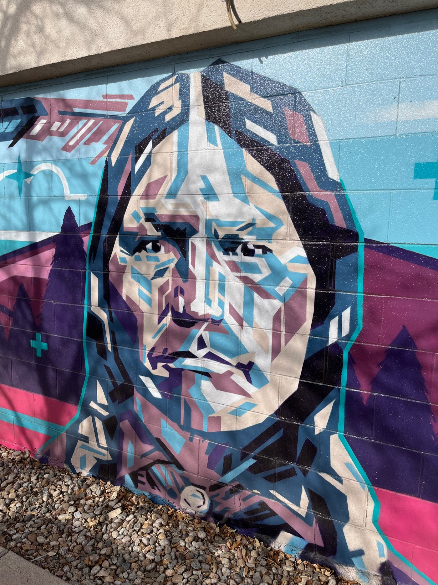

Niwot, Colorado · January 21–31, 2027
Where different worlds meet.
An independent film festival celebrating Indigenous voices, immigrant stories, Colorado filmmakers, and the next generation — in the small town named for Chief Nowoo³ (pronounced Nuh-woth) "Niwot," the Southern Arapaho leader who sought peace and dialogue in this valley.


Three bridges.
Bridge the Cultures
A homecoming for Indigenous cinema and a welcome table for every community whose story deserves to be heard — in the valley where Chief Niwot sought peace between peoples.
Bridge the Access Gap
Free and pay-what-you-can screenings, unfiltered filmmaker conversations, and open community tables — because understanding cannot happen behind a velvet rope.
Bridge the Generations
A youth film competition and scholarship that passes the torch to the next generation of Colorado storytellers, honoring a leader who always looked forward.
Ten days. One small town.
The festival runs January 21–31, 2027 across Niwot's historic venues — intimate spaces where filmmakers and audiences share the same room, the same table, and the same conversation. Full programming details to be announced.
Five tracks. One festival.
The Niwot Film Festival runs five programming tracks across ten days. See the full program →
The Left Hand Series
Indigenous filmmakers and stories — a homecoming to the ancestral Boulder Valley.
New Neighbors Showcase
Immigrant and diaspora voices from Colorado's diverse communities.
Colorado Spotlight
Emerging and established filmmakers telling Colorado's own stories.
Environmental Track
Water, land, wildfire, and the West — film as witness to the natural world.
Youth Track
Short films by St. Vrain Valley middle and high school students.
Ready to show your work?
We're accepting submissions for all five tracks. Free and pay-what-you-can screenings. Unfiltered Q&As. A real audience in a real community.
Submit a Film